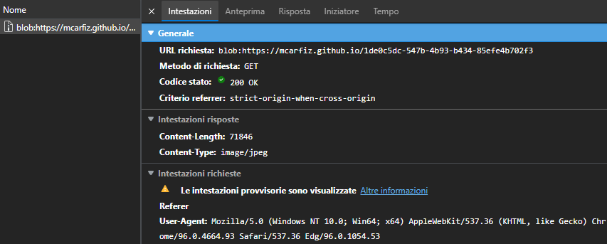
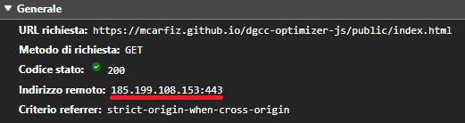

RISPOSTA: Questo sito permette di rigenerare il QR Code contenente il Green Pass in modo tale che
sia
meno denso e di conseguenza più leggibile dalle app di verifica.
DOMANDA: Cosa devo fare per generare il nuovo QR Code?
RISPOSTA: Ci sono due modi per fornire il QR Code originale: premendo il pulsante "Scegli file" e
selezionando
l'immagine del QR Code valido dall'archivio del dispositivo, oppure avviando la scansione tramite
fotocamera premendo
il pulsante "Scansiona QR" e inquadrando il QR Code. Entrambe le procedure generano automaticamente un
nuovo QR Code,
che potrà essere salvato premendo il pulsante "Download".
DOMANDA: Il sito è sicuro? Cosa succede al mio Green Pass?
RISPOSTA: Il sito è sviluppato puramente in JavaScript, una tecnologia che permette di elaborare
il Green Pass nel browser senza inviare dati sulla rete. L’applicazione non invia o salva il contenuto
del Green
Pass in nessun modo e il certificato non viene modificato.
Dettagli avanzati: Al momento del caricamento della home page, tutte le componenti necessarie
vengono
caricate in modo tale che rimangano statiche e non ci siano comunicazioni di rete durante il
caricamento e
l'elaborazione del QR Code dell'utente. Di seguito vengono riportati alcuni dettagli implementativi
e le librerie usate nei processi di manipolazione dei dati sensibili:
Selezione file: Per caricare l'immagine del QR Code dal file system viene usata la
libreria Qr-Scanner.
Nel caso del caricamento manuale di un file, JavaScript necessita la creazione di un oggetto
URL
per poter accedere all'immagine fornita dall'utente; questo processo è considerato da alcuni
browser una richiesta di rete,
come riportato nella seguente immagine di esempio:

Ciònonostante, questa richiesta non viene inviata effettivamente sulla rete e ne è prova il
fatto che la generazione può essere effettuata offline e che la richiesta non presenta un
indirizzo remoto
come nella seguente immagine di esempio:

Scansione QR: Per scansionare il QR Code viene usata la libreria
Html5-QRCode. A
differenza
della libreria precedente, questa permette a JavaScript di leggere il contenuto
dell'immagine
direttamente
dallo stream MediaStream, evitando la creazione di un oggetto blob e il conseguente URL che
in
alcuni casi
viene considerato come richiesta di rete.
Generazione del QR Code Per decodificare il contenuto del QR Code originale viene
usata
la libreria
DCC-Utils,
mentre
per la
generazione del nuovo QR Code viene usata la libreria QR-Code-Styling.
Una volta effettuata la decodifica, il contenuto viene passato senza alcuna modifica al
generatore di QR, che lo
trasforma nel nuovo QR Code
usando come parametro di correzione dell'errore il valore "L", risultante in una minore
densità
del QR Code rispetto
al valore originale "M".
DOMANDA: Cosa si intende per "Supporto alle app di verifica EU" e "Supporto all'app italiana
VerificaC19"?
RISPOSTA: Attualmente l'app di verifica italiana VerificaC19 non controlla una sequenza iniziale
di caratteri
del contenuto del QR Code, per cui la nostra applicazione rimuove questa sequenza per minimizzare la
densità del nuovo QR Code,
senza andare ad intaccare il resto del contenuto. Molte altre app di verifica europee controllano invece
questa sequenza,
quindi abbiamo fornito la possibilità di generare un Green Pass leggermente più denso, ma compatibile
con le
specifiche europee.
Dettagli avanzati: In particolare, la stringa che viene ignorata dalla verifica dell'app
italiana VerificaC19
è la dicitura "HC1:" che dovrebbe identificare la tipologia del certificato digitale e di
conseguenza la codifica
e il processo di generazione effettuati su di esso, come definito dalle
specifiche
europee.
DOMANDA: Il Green Pass qui fornito è valido come quello originale?
RISPOSTA: Certamente! Se il tuo Green Pass originale viene verificato correttamente dalle app di
verifica,
allora anche quello qui fornito sarà valido. Nel caso volessi usare il nuovo QR Code in altri paesi
europei,
assicurati di selezionare l'opzione "Supporto alle app di verifica EU" durante la procedura di
generazione.